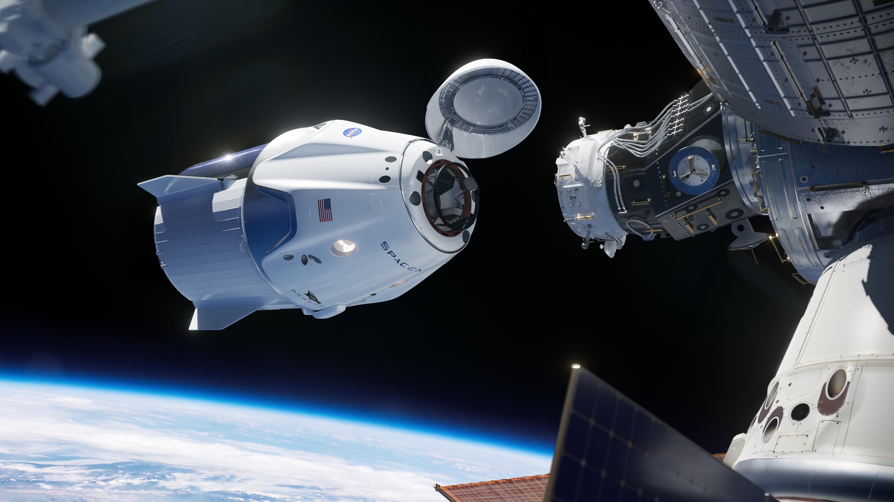

Autres Vaisseaux:
« Dragon »

Informations de Base:
La capsule de cargaison « Dragon » de SpaceX est une fusée de vol libre avec un but de livrer de la cargaison en orbite et retourner à la Terre. La partie pressurisée de la capsule a été conçu pour tenir des êtres humains et de la cargaison délicate du point de vue écologique. Quand elle entre en orbite, les propulseurs « Draco », situés à la base de la capsule, permettent le manœuvre orbital. Sa malle, qui soutient l'ascension de la fusée, se détachera de la capsule avant son entrée dans l'atmosphère de la Terre. La combinaison spatiale sert à protéger contre la chaleur pendant l'ascension et la rentrée, à fournir un environnement pressurisé pour les astronautes et à maintenir un système de refroidissement et de communications.
Description:
- Diamètre: 4 mètres.
- Volume de la capsule: 9,3 ㎥.
- Hauteur: 8,1 mètres.
- Volume de la malle: 37 ㎥.
- Masse de la charge utile de lancement: 6 000 kilogrammes.
- Masse de la charge utile d'atterrissage: 3 000 kilogrammes.